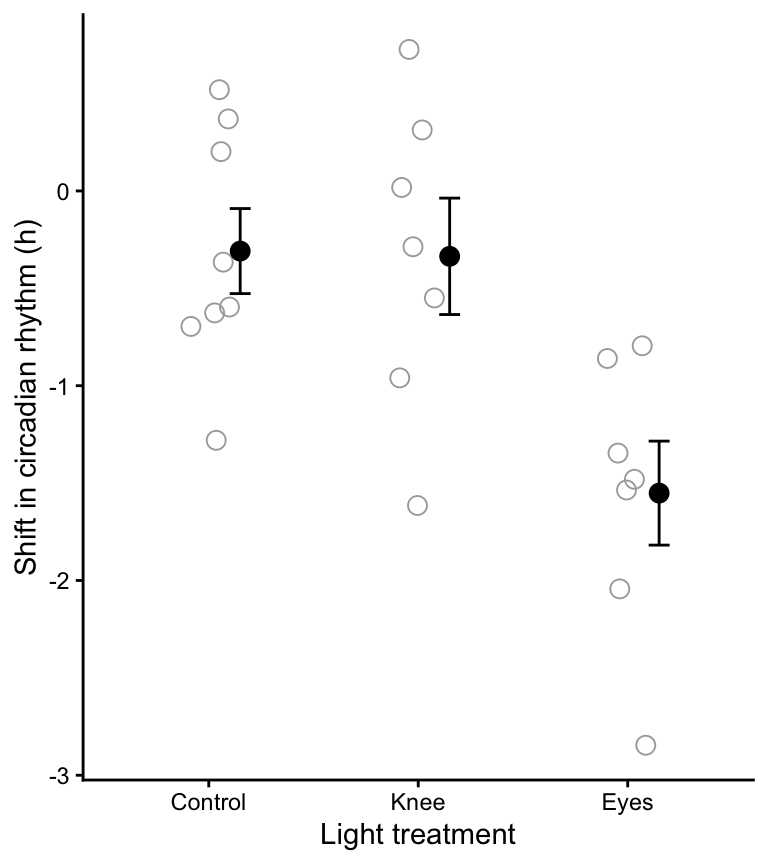
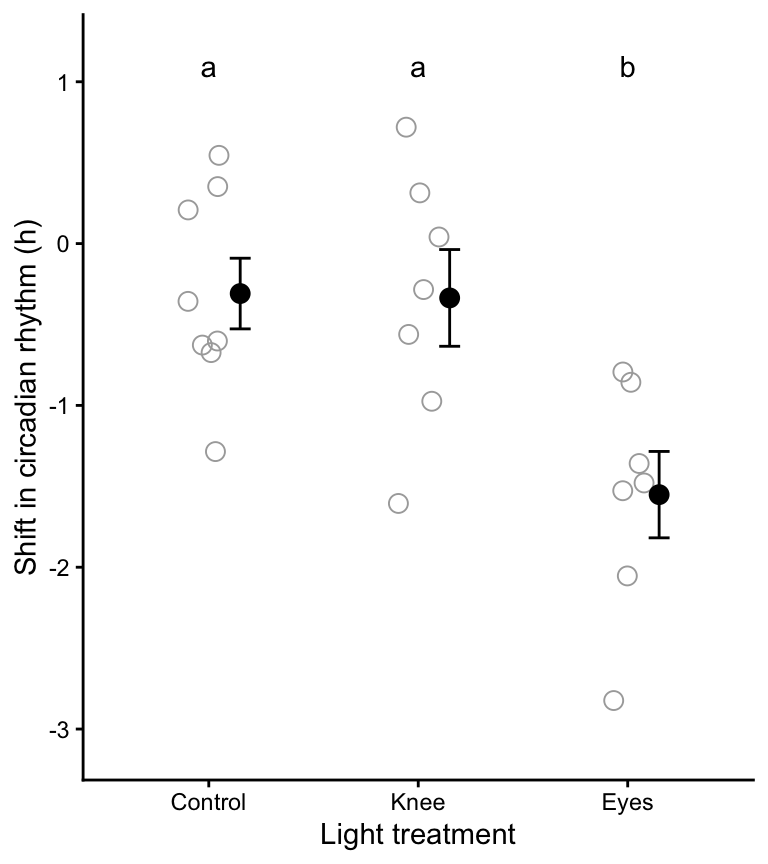

library(dplyr)
library(ggplot2)
library(readr)
library(knitr)
library(skimr)
library(broom)
library(car)
library(biol202)15 Comparing means among more than two groups
Tutorial learning objectives
- Learn how to analyze a numeric response variable in relation to a single categorical explanatory variable that has more than two groups. In other words, we will learn how to compare the means of more than 2 groups.
- Learn how to implement all the steps of an Analysis of Variance (ANOVA), which is often the most suitable method for testing the null hypothesis of no difference between the means of more than two groups (i.e. \(\mu_1 = \mu_2 = \mu_3 = \mu_i..\))
Note
It might seem strange that a test designed to compare means among groups is called “Analysis of Variance”. The reason lies in how the test actually works, as described in Chapter 15 of the text.
- Here we learn fixed-effects ANOVA (also called Model-1 ANOVA), in which the different categories of the explanatory variable are predetermined, of direct interest, and repeatable. These methods therefore typically apply to experimental studies.
- When the groups are sampled at random from a larger population of groups, as in most observational studies, one should typically use a random-effects ANOVA (also called Model-2 ANOVA). Consult the following webpage for tutorials on how to conduct various types of ANOVA.
- In this tutorial we’re learning about a One-way ANOVA, in which there is only one explanatory (categorical) variable
- Learn the assumptions of ANOVA
- Learn appropriate tables and graphs to accompany ANOVA
- Learn how to conduct a post-hoc comparison among all pairs of group means: the Tukey-Kramer post-hoc test
15.1 Load packages and import data
Load the packages we need for this tutorial:
For this tutorial we’ll use the “circadian.csv” dataset. These data are associated with Example 15.1 in the text.
The circadian data describe melatonin production in 22 people randomly assigned to one of three light treatments.
data(circadian)
Note
TIP: When analyzing a numeric response variable in relation to a categorical variable, it is good practice to ensure that the categorical variable is treated as a “factor” type variable by R, and that the categories or “levels” of the factor are ordered in the correct way for the purpose of graphs and / or tables of descriptive statistics. For example, there is often a “control” group (category), and if so, this group should come first in a graph or table.
Let’s follow this practice for the “circadian” dataset.
If we look at example 15.1 in the text, and the corresponding figure (Fig. 15.1), we see that there should be three treatment groups “Control”, “Knees”, and “Eyes”, in that order.
Let’s have a look at the data.
circadian %>%
skim_without_charts()| Name | Piped data |
| Number of rows | 22 |
| Number of columns | 2 |
| _______________________ | |
| Column type frequency: | |
| factor | 1 |
| numeric | 1 |
| ________________________ | |
| Group variables | None |
Variable type: factor
| skim_variable | n_missing | complete_rate | ordered | n_unique | top_counts |
|---|---|---|---|---|---|
| treatment | 0 | 1 | FALSE | 3 | con: 8, kne: 7, eye: 7 |
Variable type: numeric
| skim_variable | n_missing | complete_rate | mean | sd | p0 | p25 | p50 | p75 | p100 |
|---|---|---|---|---|---|---|---|---|---|
| shift | 0 | 1 | -0.71 | 0.89 | -2.83 | -1.33 | -0.66 | -0.05 | 0.73 |
And also have a look at the tibble itself:
circadian
#> # A tibble: 22 × 2
#> treatment shift
#> <fct> <dbl>
#> 1 control 0.53
#> 2 control 0.36
#> 3 control 0.2
#> 4 control -0.37
#> 5 control -0.6
#> 6 control -0.64
#> 7 control -0.68
#> 8 control -1.27
#> 9 knee 0.73
#> 10 knee 0.31
#> # ℹ 12 more rowsThe data are stored in tidy (long) format - good!
We can see the unique values of the categorical variable as follows:
circadian %>%
select(treatment) %>%
unique()
#> # A tibble: 3 × 1
#> treatment
#> <fct>
#> 1 control
#> 2 knee
#> 3 eyesTwo important things to notice here:
- The categorical variable “treatment” is recognized as a “character” variable (“chr”) instead of a “factor” variable,
- The category names are not capitalized
Let’s recode this using the method we previously learned in the 2-sample t-test tutorial, using the recode_factor function from the dplyr package.
Be sure to provide the variables in the order that you want them to appear in any tables, figures, and analyses.
circadian <- circadian %>%
mutate(treatment = recode_factor(treatment, control = "Control", knee = "Knee", eyes = "Eyes", ))Have a look:
circadian$treatment
#> [1] Control Control Control Control Control Control Control Control Knee
#> [10] Knee Knee Knee Knee Knee Knee Eyes Eyes Eyes
#> [19] Eyes Eyes Eyes Eyes
#> Levels: Control Knee EyesOK, so not only have we successfully changed the type of variable to factor, and capitalized the category names, but it turns out that the ordering of the factor “levels” is in the correct order, i.e. consistent with how it’s displayed in the text figure in example 15.1.
Now we’re ready to proceed with ANOVA!
15.2 Analysis of variance
Follow these steps when conducting a hypothesis test:
- State the null and alternative hypotheses
- Set an \(\alpha\) level
- Identify the appropriate test & provide rationale
- Prepare an appropriately formatted table of descriptive statistics for the response variable grouped by the categories of the explanatory variable.
- Visualize the data with a good graph and interpret the graph
- Assumptions
- state the assumptions of the test
- use appropriate figures and / or tests to check whether the assumptions of the statistical test are met
- transform data to meet assumptions if required
- if assumptions can’t be met (e.g. after transformation), use non-parametric test and repeat steps above
- state the assumptions of the test
- Conduct the test, and report the test statistic and associated P-value
- Calculate and include a confidence interval (e.g. for t-tests) or \(R^2\) value (e.g. for ANOVA) when appropriate
- Optionally, for ANOVA, conduct a “post-hoc” comparison of means using “Tukey-Kramer post-hoc test”
- Draw the appropriate conclusion and communicate it clearly
- Your concluding statement should refer to an ANOVA table (if required), a good figure, and the \(R^2\) value
Additional, OPTIONAL steps for ANOVA tests
These steps may be warranted depending on the context.
- An appropriately formatted ANOVA results table (definitely include this for any research projects you’re writing up)
- A good figure with results of post-hoc tests included (if these tests were conducted)
15.2.1 Hypothesis statements
The null hypothesis of ANOVA is that the population means \(\mu_i\) are the same for all treatments. Thus, for our current example in which melatonin production was measured among treatment groups:
H0: Mean melatonin production is equal among all treatment groups (\(\mu_1 = \mu_2 = \mu_3\)).
HA: At least one treatment group’s mean is different from the others
OR
HA: Mean melatonin production is not equal among all treatment groups.
We’ll set \(\alpha = 0.05\).
We’ll use a fixed-effects ANOVA, which uses the \(F\) test statistic.
15.2.2 A table of descriptive statistics
In a previous tutorial we learned how to calculate descriptive statistics for a numeric variable grouped by a categorical variable. In the comparing 2 means tutorial we also learned how to use the t.test function to calculate confidence intervals for a numeric variable.
Let’s use all these skills to generate a table of summary statistics for the “shift” variable, grouped by “treatment”:
circadian.stats <- circadian %>%
group_by(treatment) %>%
summarise(
Count = sum(!is.na(shift)),
Count_NA = sum(is.na(shift)),
Mean = mean(shift, na.rm = TRUE),
SD = sd(shift, na.rm = TRUE),
SEM = SD/sqrt(Count),
Low_95_CL = t.test(shift, conf.level = 0.95)$conf.int[1],
Up_95_CL = t.test(shift, conf.level = 0.95)$conf.int[2]
)Let’s have a look at the result, and we’ll use the kable function to make the table nicer:
kable(circadian.stats, digits = 4)| treatment | Count | Count_NA | Mean | SD | SEM | Low_95_CL | Up_95_CL |
|---|---|---|---|---|---|---|---|
| Control | 8 | 0 | -0.3088 | 0.6176 | 0.2183 | -0.8250 | 0.2075 |
| Knee | 7 | 0 | -0.3357 | 0.7908 | 0.2989 | -1.0671 | 0.3957 |
| Eyes | 7 | 0 | -1.5514 | 0.7063 | 0.2670 | -2.2047 | -0.8982 |
15.2.3 Visualize the data
We are interested in visualizing a numeric response variable in relation to a categorical explanatory variable.
We learned in an earlier tutorial that we can use a stripchart, violin plot, or boxplot to visualize a numerical response variable in relation to a categorical variable.
It is commonplace to use a stripchart for small sample sizes in each group.
We’ll use code we learned in an earlier tutorial.
However, because we’re now not only describing and visualizing data, but also testing a hypothesis about differences in group means, it is best to add group means and error bars to our stripchart.
The stat_summary function from the ggplot2 package is what provides the error bars and group means:
?stat_summaryHere’s the code:
circadian %>%
ggplot(aes(x = treatment, y = shift)) +
geom_jitter(colour = "darkgrey", size = 3, shape = 1, width = 0.1) +
stat_summary(fun.data = mean_se, geom = "errorbar",
colour = "black", width = 0.1,
position = position_nudge(x = 0.15)) +
stat_summary(fun = mean, geom = "point",
colour = "black", size = 3,
position = position_nudge(x = 0.15)) +
xlab("Light treatment") +
ylab("Shift in circadian rhythm (h)") +
theme_classic()We’ve added two sets of stat_summary functions, one for adding the group mean, and one for adding the error bars.
- The argument “fun = mean_se” adds the standard error of the group means
- the “geom = ‘errorbar’” tells ggplot to use an error bar format
- the “position = position_nudge(x = 0.15)” tells ggplot to nudge the error bar off to the side a bit, so it doesn’t obscure the data points
- the next
stat_summaryfunction is the same, but this time for the group means.
Clearly there is no difference between the control and knee treatment groups, but we’ll have to await the results of the ANOVA to see whether the mean of the “eyes” group is different.
15.2.4 Assumptions of ANOVA
The assumptions of ANOVA are:
- The measurements in every group represent a random sample from the corresponding population (NOTE: for an experimental study, the assumption is that subjects are randomly assigned to treatments)
- The response variable has a normal distribution in each population
- The variance of the response variable is the same in all populations (called the “homogeneity of variance” assumption)
Test for normality
The sample sizes per group are rather small, so graphical aids such as histograms or normal quantile plots will not be particularly helpful.
Instead, let’s rely on the fact that (i) the strip chart in Figure 2 does not show any obvious outliers in any of the groups, and (ii) the central limit theorem makes ANOVAs quite robust to deviations in normality, especially with larger sample sizes, but even with relatively small sample sizes such as these. So, we’ll proceed under the assumption that the measurements are normally distributed within the three populations.
Test for equal variances
Now we need to test the assumption of equal variance among the groups, using Levene’s Test as we learned in the checking assumptions tutorial.
variance.check <- leveneTest(shift ~ treatment, data = circadian)
variance.check
#> Levene's Test for Homogeneity of Variance (center = median)
#> Df F value Pr(>F)
#> group 2 0.1586 0.8545
#> 19We see that the P-value for the test is much greater than 0.05, so the null hypothesis of equal variance is not rejected. There is no evidence against the assumption that the variances are equal.
A reasonable statement:
“A Levene’s test showed no evidence against the assumption of equal variance (F = 0.16; P-value = 0.854).”
IF assumptions are not met
A later section discusses what to do if assumptions are NOT met.
15.2.5 Conduct the ANOVA test
There are two steps to conducting an ANOVA in R:
Use the
lmfunction (from the base package) (it stands for “linear model”) to create an object that holds the key output from the testUse the
anovafunction (from the base package) on the precedinglmoutput object to generate the appropriate output for interpreting the results.
The lm function uses the syntax: Y ~ X.
Let’s do this step first:
circadian.lm <- lm(shift ~ treatment, data = circadian) Next the anova step:
circadian.lm.anova <- anova(circadian.lm)Let’s have a look at what this produced:
circadian.lm.anova
#> Analysis of Variance Table
#>
#> Response: shift
#> Df Sum Sq Mean Sq F value Pr(>F)
#> treatment 2 7.2245 3.6122 7.2894 0.004472 **
#> Residuals 19 9.4153 0.4955
#> ---
#> Signif. codes: 0 '***' 0.001 '**' 0.01 '*' 0.05 '.' 0.1 ' ' 1This is not in the format of a traditional ANOVA table (as described in Chapter 15 of the text): it is missing the “Total” row, and it puts the degrees of freedom (df) column before the Sums of Squares. Also, the column headers could be more informative.
Nor is the object in “tidy” format.
Optionally, we can use the tidy function from the broom package to tidy the output as follows:
circadian.lm.anova.tidy <- circadian.lm.anova %>%
broom::tidy()Have a look at the tidier (but still not ideal) output:
circadian.lm.anova.tidy
#> # A tibble: 2 × 6
#> term df sumsq meansq statistic p.value
#> <chr> <int> <dbl> <dbl> <dbl> <dbl>
#> 1 treatment 2 7.22 3.61 7.29 0.00447
#> 2 Residuals 19 9.42 0.496 NA NA15.2.5.1 OPTIONAL: Generate nice ANOVA table
Let’s look again at the raw output from the anova function:
circadian.lm.anova
#> Analysis of Variance Table
#>
#> Response: shift
#> Df Sum Sq Mean Sq F value Pr(>F)
#> treatment 2 7.2245 3.6122 7.2894 0.004472 **
#> Residuals 19 9.4153 0.4955
#> ---
#> Signif. codes: 0 '***' 0.001 '**' 0.01 '*' 0.05 '.' 0.1 ' ' 1In the code chunk below we create a new function called “create.anova.table”, which we can use to convert an “anova” object (like the one above) to an appropriately formatted ANOVA table.
When you run this code chunk, it creates the function in your workspace. Once it is created, you can use it.
Note
You will need to run this chunk to create the function each time you start a new R session. AND this is a quick-and-dirty function that does NOT follow all the best practices in coding!
create.anova.table <- function(intable){
# first check that input table is of class "anova"
if(class(intable)[1] != "anova") stop("Input object not of class 'anova'")
require(dplyr) # ensures dplyr is loaded (for select, rename, bind_rows)
require(broom) # ensures broom is loaded
tidy.intable <- tidy(intable)
# "intable" is a the object from the `anova` output
temp.anova <- tidy.intable %>%
select("term", "sumsq", "df", "meansq", "statistic", "p.value") # reorder columns
temp.anova <- temp.anova %>%
rename(Source = term, SS = sumsq, MS = meansq, F = statistic, P_val = p.value) # rename columns
totals <- data.frame(
Source = "Total",
df = sum(temp.anova$df),
SS = sum(temp.anova$SS),
MS = NA,
F = NA,
P_val = NA
) # calculate totals
nice.anova.table <- as_tibble(rbind(temp.anova, totals)) # generate table
return(nice.anova.table)
}Let’s try out the function, using our original anova table:
nice.anova.table <- create.anova.table(circadian.lm.anova)And present it:
kable(nice.anova.table, digits = 4,
caption = "ANOVA table for the circadian rythm experiment.",
lable = "niceanovapdf")| Source | SS | df | MS | F | P_val |
|---|---|---|---|---|---|
| treatment | 7.2245 | 2 | 3.6122 | 7.2894 | 0.0045 |
| Residuals | 9.4153 | 19 | 0.4955 | NA | NA |
| Total | 16.6398 | 21 | NA | NA | NA |
Nice!
15.2.6 Calculate \(R^2\) for the ANOVA
One measure that is typically reported with any “linear model” like ANOVA is the “variance explained” or coefficient of determination, denoted \(R^2\).
This value indicates the fraction of the variation in Y that is explained by groups.
The remainder of the variation (\(1 - R^2\)) is “error”, or variation that is left unexplained by the groups.
To calculate this we use two steps, and we go back to our original “lm” object we created earlier:
circadian.lm.summary <- summary(circadian.lm)
circadian.lm.summary$r.squared
#> [1] 0.4341684We’ll refer to this value in our concluding statement.
Before we get there, we need to figure out which group mean(s) differ??.
15.2.7 Tukey-Kramer post-hoc test
As described in Chapter 15 in the text, planned comparisons (aka planned contrasts) are ideal and most powerful, but unfortunately we often need to conduct unplanned comparisons to assess which groups differ in our ANOVA test. This is what we’ll learn here.
We can guess from our stripchart (Figure @ref(fig:stripanova)) that it’s the “Eyes” treatment group that differs from the others, but we need a formal test.
We could simply conduct three 2-sample t-tests on each of the three pair-wise comparisons, but then we would inflate our Type-I error rate, due to multiple-testing.
The Tukey-Kramer “post-hoc” (unplanned) test adjusts our P-values correctly to account for multiple tests.
For this test we use the TukeyHSD function in the base stats package (HSD stands for “Honestly Significant Difference”).
?TukeyHSDThe one catch in using this function is that we need to re-do our ANOVA analysis using a different function… the aov function in lieu of the lm function. This is necessary because the TukeyHSD function is expecting a particular object format, which only the aov function provides.
First, let’s re-do the ANOVA analysis using the aov function, creating a new object. NOTE This is only necessary if you are wishing to conduct the post-hoc Tukey HSD analysis (which we often are).
circadian.aov <- aov(shift ~ treatment, data = circadian)Now we can pass this object to the TukeyHSD function, and use the appropriate confidence level (corresponding to 1 minus alpha):
circadianTukey <- TukeyHSD(circadian.aov, conf.level = 0.95)And let’s make the output tidy:
circadianTukey.tidy <- circadianTukey %>%
broom::tidy()Have a look a the output:
circadianTukey.tidy
#> # A tibble: 3 × 7
#> term contrast null.value estimate conf.low conf.high adj.p.value
#> <chr> <chr> <dbl> <dbl> <dbl> <dbl> <dbl>
#> 1 treatment Knee-Control 0 -0.0270 -0.953 0.899 0.997
#> 2 treatment Eyes-Control 0 -1.24 -2.17 -0.317 0.00787
#> 3 treatment Eyes-Knee 0 -1.22 -2.17 -0.260 0.0117Now let’s reformat this table for producing a nice output.
circadianTukey.tidy.table <- circadianTukey.tidy %>%
select(-c(term, null.value)) %>% # take away these two columns
rename(Contrast = "contrast", Difference = "estimate",
Conf_low = "conf.low", Conf_high = "conf.high",
Adj_Pval = "adj.p.value")Let’s see what we made:
circadianTukey.tidy.table
#> # A tibble: 3 × 5
#> Contrast Difference Conf_low Conf_high Adj_Pval
#> <chr> <dbl> <dbl> <dbl> <dbl>
#> 1 Knee-Control -0.0270 -0.953 0.899 0.997
#> 2 Eyes-Control -1.24 -2.17 -0.317 0.00787
#> 3 Eyes-Knee -1.22 -2.17 -0.260 0.0117The output clearly shows the pairwise comparisons and associated P-values, adjusted for multiple comparisons. It also shows the difference in means, and the lower and upper 95% confidence interval for the differences.
We can see that the mean for the “Eyes” treatment group differs significantly (at \(\alpha = 0.05\)) from each of the other group means.
One typically shows these results visually on the same figure used to display the data (here, Figure @ref(fig:stripanova)).
15.2.8 Visualizing post-hoc test results
Here is our original figure, to which we’ll add the results of the post-hoc test:
circadian %>%
ggplot(aes(x = treatment, y = shift)) +
geom_jitter(colour = "darkgrey", size = 3, shape = 1, width = 0.1) +
stat_summary(fun.data = mean_se, geom = "errorbar",
colour = "black", width = 0.1,
position = position_nudge(x = 0.15)) +
stat_summary(fun = mean, geom = "point",
colour = "black", size = 3,
position=position_nudge(x = 0.15)) +
xlab("Light treatment") +
ylab("Shift in circadian rhythm (h)") +
theme_classic()
To visualize the outcomes of the Tukey-Kramer post-hoc test, we superimpose a text letter alongside (or above) each group in the figure, such that groups sharing the same letter are not significantly different according to the Tukey-Kramer post-hoc test.
For this we use the annotate function, and this requires that we know the coordinates on the graph where we wish to place our annotations.
Based on our stripchart above, it looks like we need to use Y-value coordinates of around 1.1 to place our letters above each group. It may take some trial-and-error to figure this out.
Here’s the code, with the annotate function added:
ggplot(circadian, aes(x = treatment, y = shift)) +
geom_jitter(colour = "darkgrey", size = 3, shape = 1, width = 0.1) +
stat_summary(fun.data = mean_se, geom = "errorbar",
colour = "black", width = 0.1,
position=position_nudge(x = 0.15)) +
stat_summary(fun = mean, geom = "point",
colour = "black", size = 3,
position=position_nudge(x = 0.15)) +
ylim(c(-3.1, 1.2)) +
annotate("text", x = 1:3, y = 1.1, label = c("a", "a", "b")) +
labs(x = "Light treatment", y = "Shift in circadian rhythm (h)") +
theme_classic()
Notice that we have added a line including the ylim function, so that we can specify the min and max y-axis limits, ensuring that our annotation letters fit on the graph.
NOTE: The chunk option I included to get the figure heading shown above is as follows:
{r fig.cap = "Stripchart showing the phase shift in the circadian rhythm of melatonin production in 22 experimental participants given alternative light treatments. Solid circles represent group means, and bars represent +/- one SE. Group means sharing the same letter are not significantly different according to the Tukey-Kramer post-hoc test (family-wise $\\alpha$ = 0.05).", fig.width = 4, fig.height = 4.5}The “family-wise” \(\alpha\) statement means that the Tukey-Kramer test uses our initial \(\alpha\) level, but ensures that the probability of making at least one Type-1 error throughout the course of testing all pairs of means is no greater than the originally stated \(\alpha\) level.
Note
TIP: Figure @ref(fig:stripanovatukey) is the kind of figure that should be referenced, typically along with ANOVA table @ref(tab:niceanovapdf), when communicating your results of an ANOVA. For instance, with the results of the Tukey-Kramer post-hoc tests superimposed on the figure, you can not only state that the null hypothesis is rejected, but you can also state which group(s) differ from which others.
We are now able to write our truly final concluding statement, below.
- Annotating stripcharts
Pretend that our post-hoc test showed that the “Knee” group was not different from either the control or the Eyes group. Re-do the figure above, but this time place an “ab” above the Knee group on the figure. This is how you would indicate that the control and eyes grouped differed significantly from one-another, but neither differed significantly from the Knee group.
15.2.9 Concluding statement
With out ANOVA table and final figure in hand, we are ready for the concluding statement:
Shifts in circadian rhythm differ significantly among treatment groups (ANOVA; Table @ref(tab:niceanovapdf); \(R^2\) = 0.43). As shown in Figure @ref(fig:stripanovatukey), the mean shift among the “Eyes” subjects was significantly lower than both of the other treatment groups.
15.3 When assumptions aren’t met
If the normal distribution assumption is violated, and you are unable to find a transformation that works (see the Checking assumptions and data transformations tutorial), then you can try a non-parametric test.
A tutorial on non-parametric tests is under development, but will not be deployed until 2023. Consult chapter 13 in the Whitlock & Schluter text, and this website for some R examples.
In general, you might find that the “Kruskal-Wallis” rank sum test is a good non-parametric alternative to ANOVA. This can be implemented using the kruskal.test function:
?kruskal.test